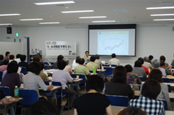

| ＜概 要＞ |
| １． |
地球温暖化が加速している。世界平均気温は過去100年で0.74℃上昇し、最近50年の昇温傾向は過去100年のほぼ２倍。ほとんどは人為起源の温室効果ガスの増加による可能性が高い。2040年までに北極海の氷はほとんど消滅すると思われる。 |
 |
| ２． |
植物・動物の生息域が変化している。生息数の減少など生態系に影響。（海水温上昇による珊瑚の白化・白熊が絶滅危惧種に・ナンキョクオキアミの減少など） |
| ３． |
温暖化の影響は平均で考えるのではなく、地域差がある認識を。気温1.5～2.5℃の上昇で動植物の約20～30％絶滅のリスクに直面しており、途上国の影響は深刻。気温の上昇幅(1850年頃を基点として)２℃未満に抑えなければ、環境破壊が進み、人類の生存が脅かされる。（洪水、マラリア、飢餓、水不足）
|
| ４． |
安定化と今後の課題は、今後20～30年の排出削減努力。京都議定書６％の目標達成計画は困難。日本のＣＯ２排出量の90％が化石燃料からで、自然エネルギーへの転換や省エネ行動の徹底が重要。ドイツの例として、太陽光・風力発電を市民が建設し、電力は買い取られる仕組みとなっている。私達が意識を変えることで、仕組みや行動も変わっていく。情報に精通し、自立し、行動する市民(環境ＮＧＯ)の存在が地球規模の環境問題の解決につながる。 |
| ５． |
国際交渉の経緯 |
| 2007年気候変動枠組条約会議(バリ会議)にて、2013年以降の削減目標と制度枠組み議論の期限を2009年とすることに合意。しかし、目指すべき中長期の削減レベルの具体的数値の明記は見送りとなり、洞爺湖サミットでも数値への言及はなかった。 |
| ６． |
まとめ |
| 日本政府に、できるだけ早期に中期削減目標を決めさせることが市民の、そして次代を担う子ども達に対する責務と考えます。 |